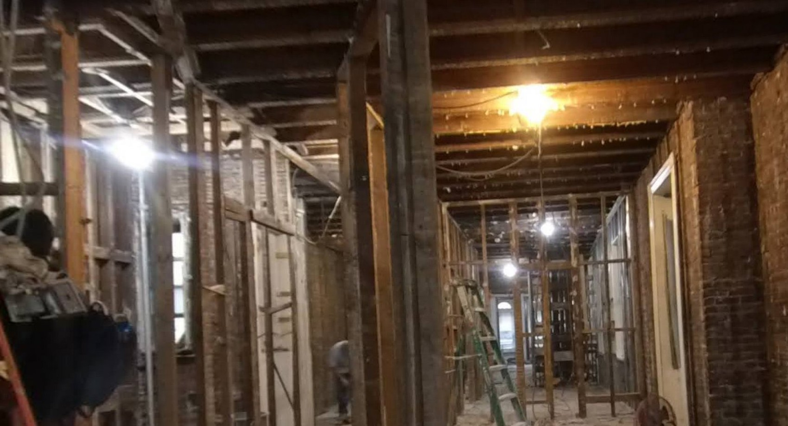

Site Log
Scan to walk the reno in 3D.
See every stage of a Brooklyn renovation—from gut demolition to finish—on your phone.
Built for owners, architects & GCs
- Before / mid / after Capture days stay shareable so remote stakeholders stay aligned.
- Job-site ready Open any stage and walk the space as it stood that day.
- Brooklyn projects Demo tour: seven capture days across ten weeks of a full reno.